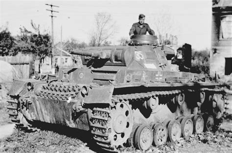
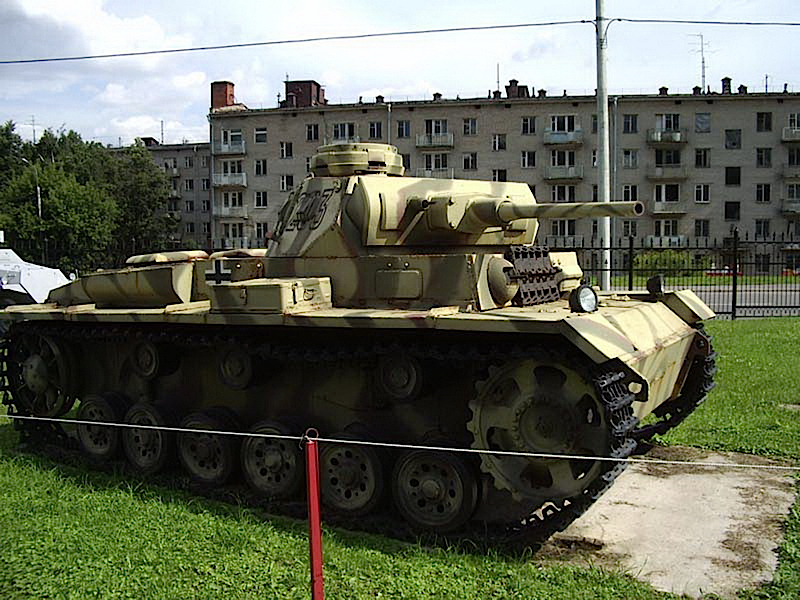
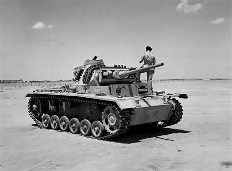
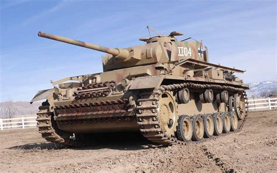

The Panzerkampfwagen III (Pz.Kpfw. III), commonly known as the Panzer III, was a medium tank developed in the
1930s by Germany, and was used extensively in World War II. The official German ordnance designation was
Sd.Kfz.141. It was intended to fight other armoured fighting vehicles and serve alongside and support the
similar Panzer IV, which was originally designed for infantry support.
Mass: 23.0 tonnes (25.4 short tons)
Length: 5.56 m (18 ft 3 in)
Width: 2.90 m (9 ft 6 in)
Height: 2.5 m (8 ft 2 in)
Crew: 5 (commander, gunner,
loader, driver, radio
operator/bow machine-gunner)
Armour: Ausf A - C: 15 mm all around
Ausf D - G: 30 mm all around
Ausf J+: 50 mm all around
Main armament: 1 × 3.7 cm KwK 36 Ausf. A - G
1 × 5 cm KwK 38 Ausf. F - J
1 × 5 cm KwK 39 Ausf. J¹- M
1 × 7.5 cm KwK 37 Ausf. N
images of the tank:




Return Back